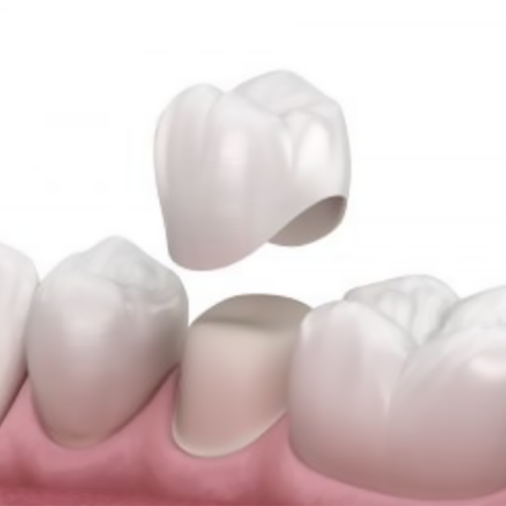
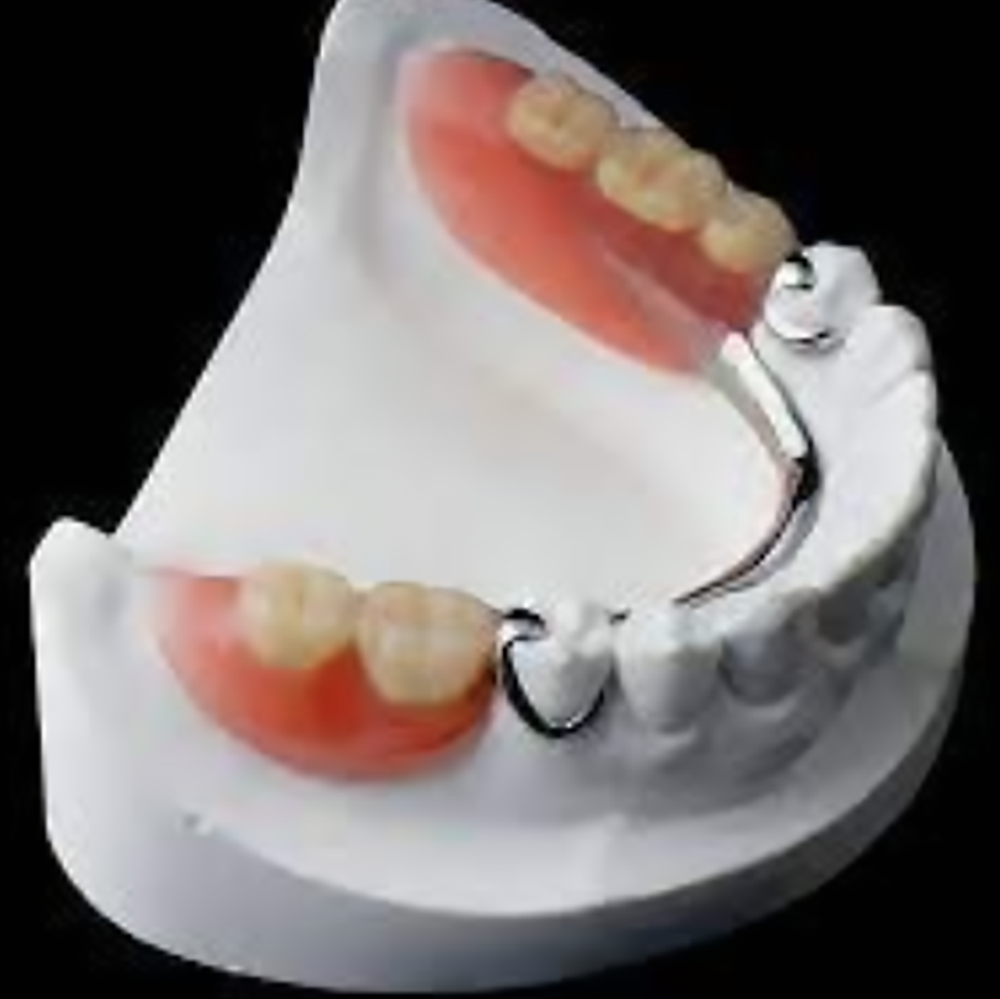
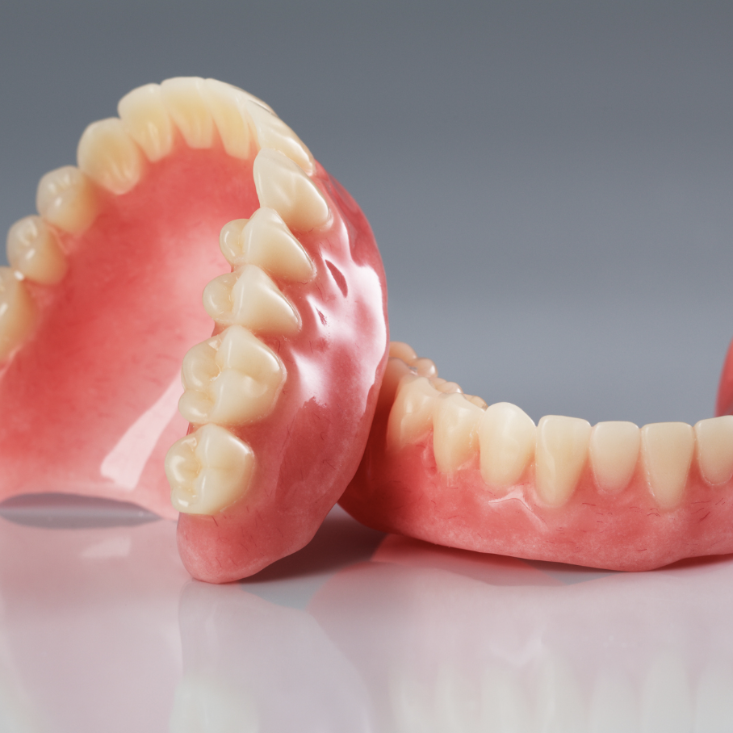

Prótesis
Prótesis|  | Prótesis fija Son las que no pueden ser retiradas por el paciente únicamente por el dentista encargado, sirven para restaurar uno o varios dientes |
||
| Prótesis removible Son las que si pueden ser retiradas por el paciente, abarcar todo el hueso donde se encontraban los dientes naturales y se sujetan con ganchos metálcos |  | ||
|  | Prótesis total Son extraibles y reemplazan toda la dentadura, estos estan echos de porcelana o acrílico. | ||